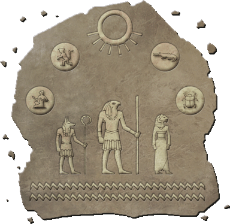

")
Tumeken's Dream

Here is a translated extract from a book sent to me by the High Priest of Icthlarin in Menaphos. Please bear in mind that Menaphosian translation is not my strongest skill, so what is here may not accurately portray the true meaning of the original text. Saying that, I feel I've captured the essence of the piece, which seems to be a parable based around the desert god pantheon. Most likely, it is used as a tool both to pass on Menaphosian beliefs and to teach the values which one should adhere to in desert life. Fascinating. - Reldo |
Heat shimmers over crack'd dry earth, over sandy dunes,
Bleached skulls with permanent rictus grins:
Kharid, seemingly barren, yet life exists within this realm.
Lizards skitter, plants drink of the Elid, and the desert peoples rejoice.
God of the Sun, Lord of Light, ruler of these lands: Tumeken arises this morn.
Tumeken
 n the early ages, Tumeken did come to this world of RuneScape,
n the early ages, Tumeken did come to this world of RuneScape,
Though, where from, we cannot know.
Then, it was a land of great potential, fresh and new within all existence.
Being god of the sun, he chose to bless the Desert with his deity,
Naming it Kharid, body of the sun, and brought his peoples to this place.
Kharid was fierce and hard, but Tumeken's people prospered,
Drawing life from the desolation and living in peace.
Tumeken was content, but longed for companionship,
For despite the love of his people, he was alone among the gods,
Whose own followers dared not brave the harsh desert, for their lack of reverence to him.
Elidinis
 o it was that Tumeken set out to explore his lands,
o it was that Tumeken set out to explore his lands,
Wandering the dunes in search of a queen to share his rule,
Tiring as each day passed with no result.
Until one day he did come upon the beauty of the Elid,
From which he drank deep and found himself nourished.
So he deigned to journey to the river's source,
For the source of such life within the arid sands of the Kharid
Could be naught but the essence of life itself.
And so it was he met Elidinis, her visage as beauteous as the river,
And loved her in all her countenances, as she did in his.
Icthlarin
 hus the light in the sky and the waters of life became as one:
hus the light in the sky and the waters of life became as one:
From life came death, in the form of a son, Icthlarin.
But death in the desert is not to be feared.
Where Tumeken and Elidinis bring life, their son brought balance,
Caring for those that passed and leading them safely to the realm of the dead
Like his father, he too did bring his own peoples to RuneScape:
A tribe of powerful sorcerers, masters of death and war.
Here in the desert they did fight, and the lands beyond, and the desert children wept.
So Icthlarin turned his back on these charges, returning to his father's flock,
And his reverence was restored amongst the people.
Amascut, The Devourer
here was a daughter also, Amascut, red-haired and handsome,
Though her balance was of a different kind.
While her sibling cared for the souls of the dead,
She would treat their bodies with the same respects,
Completing the circle of life, death and rebirth.
But her mind did warp as she saw her sibling's tribe,
Bringing death and destruction on the same whim as was her calling.
Vowing petty vengeance, she brought obliteration, both physical and spiritual,
And the children of the desert grew to fear her, for she had become
Monstrous. Twisted and fallen. Liar. Deceiver. Devourer.
Tumeken's Dream
eeing himself in the failings of his children, Tumeken wearied.
Icthlarin's return to grace did some to renew him,
And so he marked his son to rule in his stead for a time, while he rested.
So it was that Tumeken departed his wife, tears welling in her eyes,
And his son, standing proud, and his daughter, full of spite.
Then, Tumeken fell into a deep reverie, for four days and four nights,
Where he did dream of his journey through his desert realm,
Travelling to its edges to discover himself anew.
And it is said that on his travels each day, he did find a new part of himself,
Granting it form and deity, to aid him in his task to rule.
And so began the dream of Tumeken.
Day, the First - Het
 n the first day of his dream, Tumeken chose to travel to the north of the desert, where a great city of men had arisen. Al Kharid: city of the body of the sun. On his journey northward he stayed close to the banks of the Elid and saw many ugthankis and camels filling their humps. When it came time to move away from the river, Tumeken filled a skin full of Elid's essence to carry on his journey as nourishment, and to help hold onto the memory of Elidinis.
n the first day of his dream, Tumeken chose to travel to the north of the desert, where a great city of men had arisen. Al Kharid: city of the body of the sun. On his journey northward he stayed close to the banks of the Elid and saw many ugthankis and camels filling their humps. When it came time to move away from the river, Tumeken filled a skin full of Elid's essence to carry on his journey as nourishment, and to help hold onto the memory of Elidinis.
After leaving the comfortable banks of the Elid, he passed many more people, yet the further he travelled, the weaker they appeared to be; feeble of body and lacking of health, the desert was slowly taking them. Tumeken helped them how he could, sharing his water and carrying the infirm, but inside he pitied those of his people too fragile to survive life in the desert.
It was not long before he found himself passing through a mountain range at the desert's northern border, whereupon he stumbled across a man. But this was no ordinary man - he towered over all, standing stock in the middle of the pass, arms outstretched as if he alone were holding back the mountains, keeping the pass open for those fleeing the desert. He appeared carved of the same stone as the rocks around him, a true sight to behold: muscled and olive-skinned; physical perfection in human form. Strength and health radiated from his every fibre.
Tumeken approached the man and said: "You are, indeed, the strongest of men. I shall give unto you a piece of myself, so that you may help me rule this desert realm, an example to my people to take care of their own physical well-being, so that they too can be blessed by Tumeken." And so, the lesser god Het was born, and Tumeken, happy with his day's work, returned to his camp at the centre of the desert to prepare for tomorrow's journey.
Day, the Second - Apmeken
n the second day of his dream, Tumeken chose to travel to the west of the desert, where it was known that two encampments of men did dwell, of opposing forces. He travelled over tall dunes and rocky outcrops for some time, passing pyramids erected to honour figures of worship, until eventually he reached the border between the two camps.
There, he saw groups of men, women and children from both camps, facing each other upon their border. They were heatedly arguing, but not a single argument - small groups splintered from the main: gossiping, debating, scrapping and insulting over every issue of contention two peoples can have. Tumeken saddened upon seeing his followers so embittered.
Then, beyond the throng he caught sight of a troupe of apes, preening each other, playing and learning together, sharing food and chittering excitedly. And he did call out to them, and the two tribes held their tongues in awe as one of the apes scampered between them towards Tumeken, whereupon she clambered playfully up onto the god's shoulders. Then, looking back to the troupe, the tribes understood why he had chosen to bless the monkey and not them, and vowed to mend their ways.
Tumeken stroked the monkey's chin and said: "You are, indeed, the most sociable of creatures, bringing joy and happiness to all around. I shall give unto you a piece of myself, so that you may help me rule this desert realm, an example to my people to take pleasure in the joys of society, so that they too can be blessed by Tumeken." And so, the lesser god Apmeken was born, and Tumeken, happy with his day's work, returned to his camp at the centre of the desert to prepare for tomorrow's journey.
Day, the Third - Crondis
n the third day of his dream, Tumeken chose to travel to the east of the desert, where there was a great swampland, which bordered an even greater city known as Ullek. There, Tumeken hoped to see his followers at their most devout, it being the largest of all desert settlements.
The citizens of Ullek celebrated his arrival and put in motion a feast in his honour, despite his protestations. They sent out many axe men to gather wood for their fires and many hunters to slay beasts for the meal. Water and wine came in voluminous earthenware containers; fruits piled up as tall as people. Tumeken's eyes were opened to the wastefulness of it all. Fires piled tens of times higher than a more simple meal would require; fat men reclined in chairs, cramming their spittle-flecked mouths with yet more fodder.
Despondent, the god decided to leave the city, passing through it to the swamps, whereupon he spied a crocodile. The animal was sleek but powerful, with keen eyes that, in the moonlight, could have been seen to contain a glint. It was stalking some prey through the reeds, slowly, silently, until it closed enough to launch itself. The small animal it had been tracking fought with whatever remaining strength it had, but inevitably the crocodile had her own, well-won meal.
Tumeken caught the eye of the crocodile, nodded, and said: "You are, indeed, the most resourceful of creatures, taking pleasure in hunting for no more than your own sustenance. I shall give unto you a piece of myself, so that you may help me rule this desert realm, an example to my people not to overindulge in their physical pleasures, so that they too can be blessed by Tumeken." And so, the lesser god Crondis was born, and Tumeken, happy with his day's work, returned to his camp at the centre of the desert to prepare for tomorrow's journey.
Day, the Fourth - Scabaras
n the fourth day of his dream, Tumeken chose to travel to the south of the desert. Not much was to be found in that region, but it was the last place unexplored by him, and so he set out. The heat was particularly fierce that day, but regardless, Tumeken pressed on through endless dunes.
Hours passed without event. Not a single soul crossed the god's path; not one lone settlement. Yet the sun still bore down on the god, sweltering and desiccating him. Tumeken reached for his skin, for Elid's life-blood, but found it empty - he had drained it on his previous travels, forgetting to refill it each day. Knowing his predicament, he knew he had to seek shelter from the heat and wait out the day, lest he himself succumb to the desert.
As he was nearing his limits, his grateful eyes fell upon a lone tunnel entrance, which delved deep below the desert, providing him a cool place in which to recuperate. Many more hours passed within this cave, providing the god with ample time in which to reflect forlornly. During this time, he saw a small beetle burrow his way into the chamber, but noticing Tumeken, the creature burrowed away. An hour later, the beetle emerged out of another tunnel, but seeing the god still there, disappeared once again.
Yet another hour passed and the beetle returned, but Tumeken was ready this time, snatching up the cautious little thing and said: "You are, indeed, the most unusual being, digging your tunnels in isolation, avoiding contact even with me, your god. I shall give unto you a piece of myself, so that you may help me rule this desert realm, an example to my people of what can become of them, should they stray too far into solitude." And so, the lesser god Scabaras was forcibly born, the last of the lesser gods.
And Tumeken longed again to see his wife and children, and was impassioned by Scabaras to end his dream. For, despite their flaws, they were no more flawed than he. Night had now fallen, so, after emerging from the cave, Tumeken returned to his camp at the centre of the desert, not to rest for another day's journey, but to awaken from his dream.
And so ended the dream of Tumeken.
Heat shimmers over crack'd dry earth, over sandy dunes,
Bleached skulls with permanent rictus grins:
Kharid, seemingly barren, yet life exists within this realm.
Lizards skitter, plants drink of the Elid, and the desert peoples rejoice.
God of the Sun, Lord of Light, ruler of these lands: Tumeken arises this morn.

More articles in
Lores and Histories
|
|